Specification Part I
1 OUTLIERS
1.1 Anscombe’s Quartet Data
data( anscombe )
m1 <- lm( y1 ~ x1, data=anscombe )
m2 <- lm( y2 ~ x2, data=anscombe )
m3 <- lm( y3 ~ x3, data=anscombe )
m4 <- lm( y4 ~ x4, data=anscombe )
par(mfrow = c(2, 2), mar = 0.1+c(4,4,1,1), oma = c(0, 0, 2, 0))
plot( y1 ~ x1, data=anscombe,
col = "red", pch = 21, bg = "orange", cex = 1.2,
xlim = c(3, 19), ylim = c(3, 13))
abline( m1, col = "blue")
plot( y2 ~ x2, data=anscombe,
col = "red", pch = 21, bg = "orange", cex = 1.2,
xlim = c(3, 19), ylim = c(3, 13))
abline( m2, col = "blue")
plot( y3 ~ x3, data=anscombe,
col = "red", pch = 21, bg = "orange", cex = 1.2,
xlim = c(3, 19), ylim = c(3, 13))
abline( m3, col = "blue")
plot( y4 ~ x4, data=anscombe,
col = "red", pch = 21, bg = "orange", cex = 1.2,
xlim = c(3, 19), ylim = c(3, 13))
abline( m4, col = "blue")
mtext("Anscombe's 4 Regression data sets", outer = TRUE, cex = 1.5)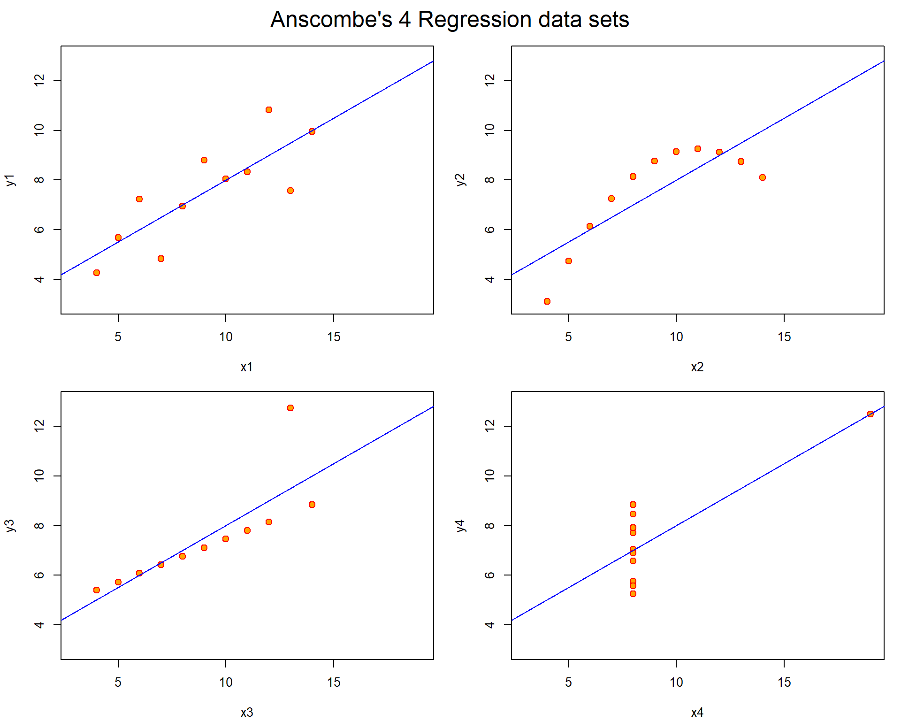

# {r, results='asis'}
stargazer( m1, m2, m3, m4, type="html", digits=2,
omit.stat = c("f","ser") )1.2 Model Fit Diagnostics
There are a bunch of diagnostics that we can run to examine whether we should worry about specification bias.
par( mfrow=c(2,2), oma=c(2,0,0,0) )
# plot( m1 )
# mtext( "Model 1", side=1, outer = TRUE, cex = 1.5)
plot( m3 )
mtext("Model 3", size=1, outer = TRUE, cex = 1.5)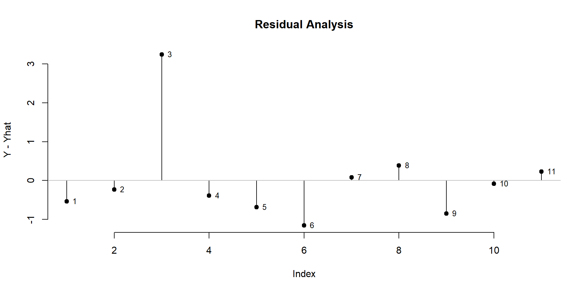
1.3 Residual Analysis
The first step in outlier analysis is finding points that are the furthest away from the regression line. We can simply look at the residuals.
plot( m3$residuals, type="h", main="Residual Analysis", bty="n", ylab="Y - Yhat" )
points( m3$residuals, pch=19 )
text( 1:11, m3$residuals, 1:11, pos=4, cex=0.8 )
abline( h=0, col="gray")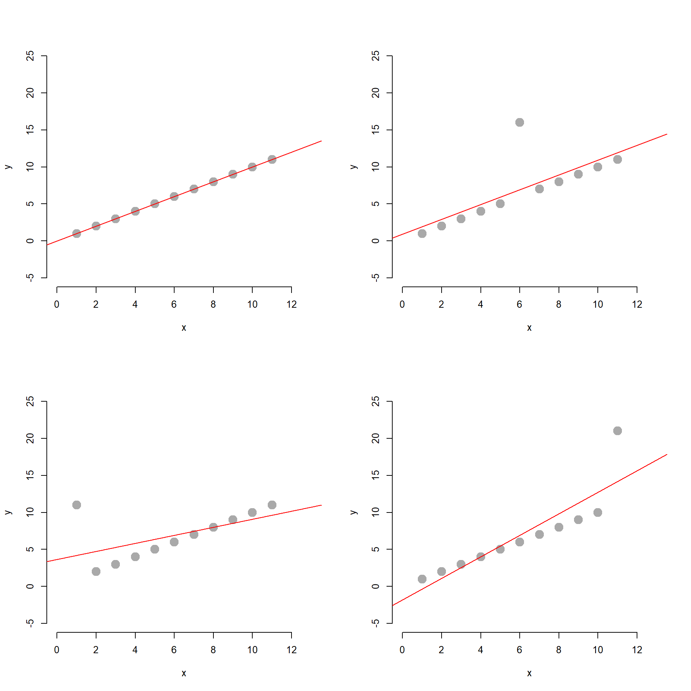
The problem with this approach is that not all outliers impact the regression in the same way. Outliers near the mean of X and Y will tug the regression line up or down slightly, so they impact the intercept only. Outliers near the lower and upper range of X will tilt the regression line, impacting both the slope and the intercept.
par( mfrow=c(2,2))
x <- 1:11
y <- 1:11
mm1 <- lm( y ~ x )
plot( x, y, bty="n", pch=19, col="darkgray", cex=2, ylim=c(-5,25), xlim=c(0,13) )
abline( mm1, col="red" )
y[6] <- y[6]+10
mm2 <- lm( y ~ x )
plot( x, y, bty="n", pch=19, col="darkgray", cex=2, ylim=c(-5,25), xlim=c(0,13) )
abline( mm2, col="red" )
y <- 1:11
y[1] <- y[1] + 10
mm3 <- lm( y ~ x )
plot( x, y, bty="n", pch=19, col="darkgray", cex=2, ylim=c(-5,25), xlim=c(0,13) )
abline( mm3, col="red" )
y <- 1:11
y[11] <- y[11] + 10
mm4 <- lm( y ~ x )
plot( x, y, bty="n", pch=19, col="darkgray", cex=2, ylim=c(-5,25), xlim=c(0,13) )
abline( mm4, col="red" )stargazer( mm1, mm2, mm3, mm4, type="html", digits=2,
omit.stat = c("f","ser") )| Dependent variable: | ||||
| y | ||||
| (1) | (2) | (3) | (4) | |
| x | 1.00*** | 1.00*** | 0.55* | 1.45*** |
| (0.00) | (0.30) | (0.26) | (0.26) | |
| Constant | 0.00*** | 0.91 | 3.64* | -1.82 |
| (0.00) | (2.06) | (1.78) | (1.78) | |
| Observations | 11 | 11 | 11 | 11 |
| R2 | 1.00 | 0.55 | 0.32 | 0.77 |
| Adjusted R2 | 1.00 | 0.50 | 0.25 | 0.75 |
| Note: | p<0.1; p<0.05; p<0.01 | |||
1.4 Cook’s Distance
Let’s focus on one common measure one used to identify outliers that are having a large impact on our regression model. Cook’s distance focuses not on distance from the regression line, but instead is a measure of how much leverage each point will have on the slope of the model.
par( mfrow=c(1,2) )
plot( y3 ~ x3, data=anscombe,
col = "red", pch = 21, bg = "orange", cex = 1.2,
xlim = c(3, 19), ylim = c(3, 13))
abline( m3, col = "blue")
text( anscombe$x3, anscombe$y3, 1:11, pos=4 )
plot( cooks.distance( m3 ), pch=19, bty="n", ylab="Cook's Distance" )
text( 1:11, cooks.distance( m3 ), 1:11, pos=4 )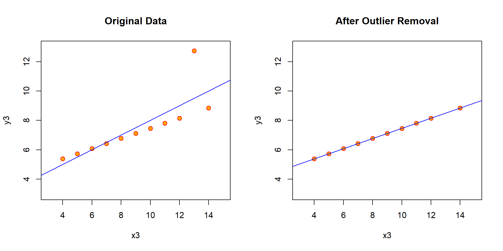
cbind( 1:11, cooks.distance( m3 ) ) %>% pander()| 1 | 0.01176 |
| 2 | 0.002141 |
| 3 | 1.393 |
| 4 | 0.005473 |
| 5 | 0.02598 |
| 6 | 0.3006 |
| 7 | 0.0005176 |
| 8 | 0.03382 |
| 9 | 0.05954 |
| 10 | 0.0003546 |
| 11 | 0.006948 |
Dealing with outliers can be tricky because once you start changing your data you are going down a slippery slope toward manufacturing results. In the case that the outlier is a data entry error you can fix it or eliminate it without hesitation. But if the data point is accurate and it has a large impact on your outcome then you need to take care to explain and justify your actions. If you delete outliers then report results before and after you have altered the data for the sake of transparency.
There are several rules of thumb on how to use Cook’s distance to identify outliers:
- A general rule of thumb is that observations with a Cook’s D of more than 3 times the mean distance is a possible outlier.
- An alternative interpretation is to investigate any point over 4/n, where n is the number of observations.
- Other authors suggest that any “large” Di should be investigated. How large is “too large”? The consensus seems to be that a Di value of more that 1 indicates an influential value, but you may want to look at values above 0.5.
- An alternative (but slightly more technical) way to interpret Di is to find the potential outlier’s percentile value using the F-distribution. A percentile of over 50 indicates a highly influential point.
par( mfrow=c(1,2) )
plot( y3 ~ x3, data=anscombe, main="Original Data",
col = "red", pch = 21, bg = "orange", cex = 1.2,
xlim = c(3, 15), ylim = c(3, 13))
abline( m3, col = "blue")
anscombe$x3[3] <- NA
anscombe$y3[3] <- NA
m3.2 <- lm( y3 ~ x3, data=anscombe )
plot( y3 ~ x3, data=anscombe, main="After Outlier Removal",
col = "red", pch = 21, bg = "orange", cex = 1.2,
xlim = c(3, 15), ylim = c(3, 13))
abline( m3.2, col = "blue")stargazer( m3, m3.2, type="html", digits=2,
omit.stat = c("ser") )| Dependent variable: | ||
| y3 | ||
| (1) | (2) | |
| x3 | 0.50*** | 0.35*** |
| (0.12) | (0.0003) | |
| Constant | 3.00** | 4.01*** |
| (1.12) | (0.003) | |
| Observations | 11 | 10 |
| R2 | 0.67 | 1.00 |
| Adjusted R2 | 0.63 | 1.00 |
| F Statistic | 17.97*** (df = 1; 9) | 1,160,688.00*** (df = 1; 8) |
| Note: | p<0.1; p<0.05; p<0.01 | |
2 NONLINEAR RELATIONSHIPS
How do we address the situation when our relationships are nonlinear? This is important in public policy and program evaluation because of the economic phenomenon of diminishing marginal returns. If we have no resources or program services then providing a little big might have a large impact on the outcome. If we already have lots of resources and access then adding a little more might not have as much of an impact.
Let’s now consider the second case in the quartet.
plot( y2 ~ x2, data=anscombe,
col = "red", pch = 21, bg = "orange", cex = 3,
xlim = c(3, 15), ylim = c(3, 13), bty="n")
abline( m2, col = "blue")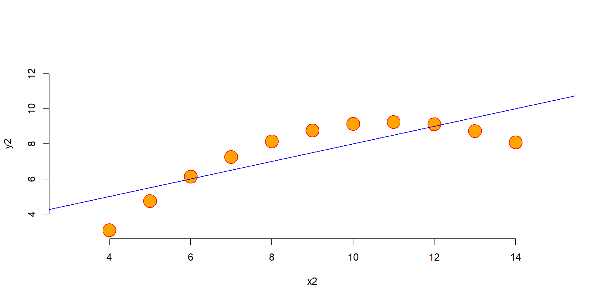
We can see that the linear model does not adequately represent the true relationship. To get a better model we must introduce quadratic terms to allow for non-linear fit.
Linear: \(Y = b_{0} + b_{1}X1 + e\)
Nonlinear: \(Y = b_{0} + b_{1}X1 + b_{2}X1^2 + e\)
x <- anscombe$x2
y <- anscombe$y2
x_squared <- x^2
df <- data.frame( Y=y, X=x, X_squared=x_squared )
row.names(df) <- NULL
df %>% pander| Y | X | X_squared |
|---|---|---|
| 9.14 | 10 | 100 |
| 8.14 | 8 | 64 |
| 8.74 | 13 | 169 |
| 8.77 | 9 | 81 |
| 9.26 | 11 | 121 |
| 8.1 | 14 | 196 |
| 6.13 | 6 | 36 |
| 3.1 | 4 | 16 |
| 9.13 | 12 | 144 |
| 7.26 | 7 | 49 |
| 4.74 | 5 | 25 |
2.1 Linear and Quadratic Models
quad1 <- lm( y ~ x )
quad2 <- lm( y ~ x + x_squared )
stargazer( quad1, quad2, type="html", digits=2,
omit.stat = c("ser","f") )| Dependent variable: | ||
| y | ||
| (1) | (2) | |
| x | 0.50*** | 2.78*** |
| (0.12) | (0.001) | |
| x_squared | -0.13*** | |
| (0.0001) | ||
| Constant | 3.00** | -6.00*** |
| (1.13) | (0.004) | |
| Observations | 11 | 11 |
| R2 | 0.67 | 1.00 |
| Adjusted R2 | 0.63 | 1.00 |
| Note: | p<0.1; p<0.05; p<0.01 | |
par( mfrow=c(1,2) )
plot( y2 ~ x2, data=anscombe, main="Linear Fit",
col = "red", pch = 21, bg = "orange", cex = 1.2,
xlim = c(3, 19), ylim = c(3, 10), bty="n")
abline( m2, col = "blue")
plot( y2 ~ x2, data=anscombe, main="Quadratic Fit",
col = "red", pch = 21, bg = "orange", cex = 1.2,
xlim = c(3, 19), ylim = c(3, 10), bty="n")
lines( x[order(x)], quad2$fitted.values[order(x)], col = "blue")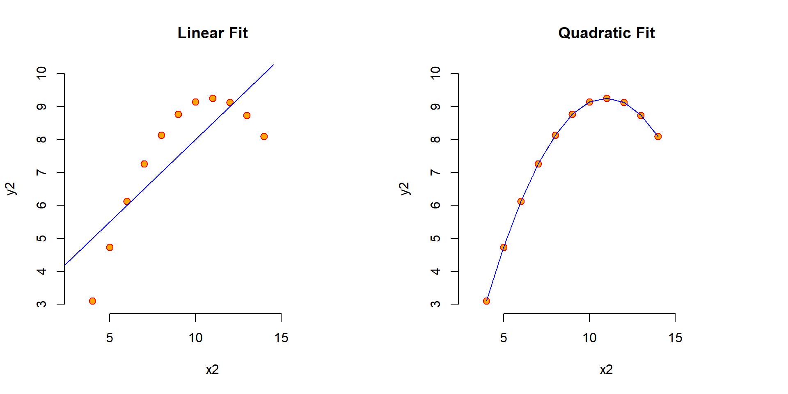
3 Interpretation of Program Effects
The main challenge that nonlinear models present is the interpretation of effects.
Up until now we have used the slope of X to determine the impact of our program. If the slope is negative five, for exmaple, we infer that for each additional student we add to the classroom we see a drop in the average standardized test score in the classroom of five points. That doesn’t matter if we have 10 students and we are adding an 11th, or if we have 40 students and we are adding a 41st (which is likely an unrealistic scenario).
coefficients( quad2 ) %>% round(4)In the nonlinear case, however, the marginal impact of an additional student will be different depending upon the initial class size. Consider Anscombe’s second case above.
\(Y = b_{0} + b_{1}X1 + b_{2}X1^2\)
Where
\(b_{0} = -6.00\)
\(b_1 = 2.78\)
\(b_2 = -0.13\)
Now let’s consider what happens when we add an additional unit of the treatment in three cases:
3.1 Case 1: X=6
x_pos <- 6
(2.7808)*(x_pos+1) + (-0.1267)*((x_pos+1)^2) -5.9957 - ( (2.7808)*(x_pos) + (-0.1267)*(x_pos^2) -5.9957 )Program Effect of one additional unit of X: \((\hat{Y} | X=7) - (\hat{Y} | X=6 )\)
\([ (2.78)(7) + (-0.13)(7^2) -6 ] - [ (2.78)(6) + (-0.13)(6^2) -6 ] = 1.13\)
3.2 Case 1: X=10
x_pos <- 10
(2.7808)*(x_pos+1) + (-0.1267)*((x_pos+1)^2) -5.9957 - ( (2.7808)*(x_pos) + (-0.1267)*(x_pos^2) -5.9957 )\((\hat{Y} | X=11) - (\hat{Y} | X=10 )\)
\([ (2.78)(11) + (-0.13)(11^2) -6 ] - [ (2.78)(10) + (-0.13)(10^2) -6 ] = 0.12\)
3.3 Case 1: X=13
x_pos <- 13
(2.7808)*(x_pos+1) + (-0.1267)*((x_pos+1)^2) -5.9957 - ( (2.7808)*(x_pos) + (-0.1267)*(x_pos^2) -5.9957 )Program Effect of one additional unit of X: \((\hat{Y} | X=14) - (\hat{Y} | X=13 )\)
\([ (2.78)(14) + (-0.13)(14^2) -6 ] - [ (2.78)(13) + (-0.13)(13^2) -6 ] = -0.64\)
3.4 Or More Generally
y.hat <- quad2$fitted.values[order(x)]
dt <- data.frame( X=4:13, MarginEffect=round(diff( y.hat ),2) )
row.names(dt) <- NULL
dt %>% pander| X | MarginEffect |
|---|---|
| 4 | 1.64 |
| 5 | 1.39 |
| 6 | 1.13 |
| 7 | 0.88 |
| 8 | 0.63 |
| 9 | 0.37 |
| 10 | 0.12 |
| 11 | -0.13 |
| 12 | -0.39 |
| 13 | -0.64 |
# diff( y[order(x)] )3.5 Effects of Adding Unit or Subtracting are Nonsymmetrical
Also note that if you are in a classroom with ten students, then the effect of adding a student will not be the same as the effect of removing a student.
\(ABS( (\hat{Y} | X=5) - (\hat{Y} | X=4 ) )\) does not equal \(ABS( (\hat{Y} | X=4) - (\hat{Y} | X=5 ) )\)
3.6 Reporting Program Effects
The typical way to address this issue in a program evaluation report is to select several representative cases and report the program effects for each. For example, you might select the typical (median) student, a small classroom (1st quartile of X), and a large classroom (3rd quartile of X).
It is discouraged to interpret model effects at the min and max values of X because they may be outliers and the model predictions will be less robust.
4 REGRESSIONS WITH GROUPS
Let’s consider a basic model of wages as a function of experience.
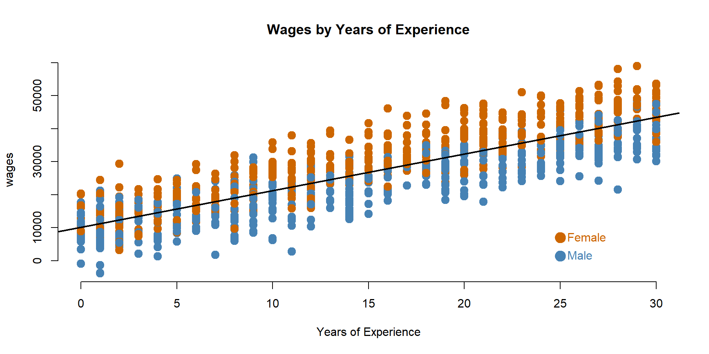
Our analysis gets much more interesting when we can include groups. In this instance we will include a dummy variable (one that takes on values of 1 or 0) for gender.
palette( c("steelblue","darkorange3") )
plot( years, wages, pch=19, col=(female+1), cex=1.5, bty="n",
main="Wages by Years of Experience", xlab="Years of Experience" )
abline( lm(wages~years), col="black", lwd=2 )
points( 25, 1500, col="steelblue", pch=19, cex=2 )
text( 25, 1500, "Male", col="steelblue", pos=4 )
points( 25, 7000, col="darkorange3", pch=19, cex=2 )
text( 25, 7000, "Female", col="darkorange3", pos=4 )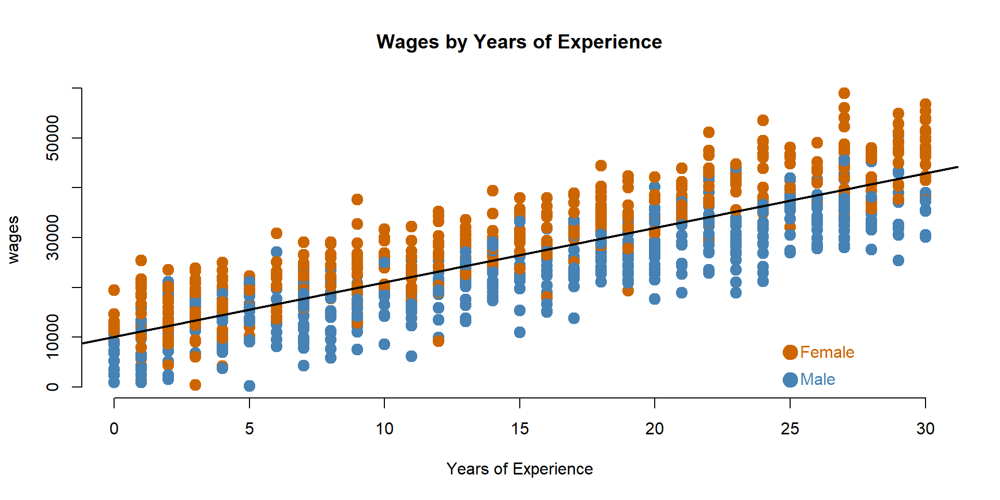
When we have dummy variables, our data looks something like this where Female=1 represents women, and Female=0 represents men in the data.
data.frame( Wages=wages, Years=years, Female=female )[1:10,] %>% pander| Wages | Years | Female |
|---|---|---|
| 16702 | 12 | 0 |
| 31080 | 17 | 0 |
| 23263 | 9 | 0 |
| 44397 | 24 | 1 |
| 7593 | 2 | 1 |
| 44228 | 25 | 0 |
| 20228 | 11 | 0 |
| 21106 | 14 | 0 |
| 51422 | 27 | 1 |
| 29975 | 17 | 0 |
When we have categorical variables we can now look at many interesting nuances in relationships between the groups. Specifically, in the models reported below we can ask more interesting questions:
4.1 Model 1: Do men and women earn different wages, on average?
Model: \(Wages = b_0 + b_1*Female\)
Test: If b0 is significant, Men’s wages are different than zero. If b1 is significant, Women’s wages are different than Men’s.
Note: This is an unconditional average, so it might be explained by other factors like differences in experience between men and women.
4.3 Model 3: Do men and women have different initial wages at the start of their careers?
Model: \(Wages = b_0 + b_1*Years + b_2*Female\)
Test: If b2 is significant then the Female intercept (b0+b2) is different than the Male intercept (b0).
4.4 Model 4: Are the gains in wages related to experience the same for men and women?
Model: \(Wages = b_0 + b_1*Years + b_2*Female + b_3*Years*Female\)
Test: If b3 is significant then the slope for Women (b1+b3) is different than the slope for Men (b1).
Note: If b3 is not significant it is better to use the model with one slope for both groups.
m.01 <- lm( wages ~ female )
m.02 <- lm( wages ~ years )
m.03 <- lm( wages ~ years + female )
m.04 <- lm( wages ~ years + female + years*female )
stargazer( m.01, m.02, m.03, m.04, type="html", digits=0,
intercept.bottom = FALSE,
omit.stat = c("ser","f","rsq","adj.rsq") )| Dependent variable: | ||||
| wages | ||||
| (1) | (2) | (3) | (4) | |
| Constant | 22,836*** | 9,781*** | 6,181*** | 8,034*** |
| (516) | (369) | (347) | (432) | |
| female | 6,761*** | 6,901*** | 3,378*** | |
| (718) | (318) | (596) | ||
| years:female | 237*** | |||
| (34) | ||||
| years | 1,113*** | 1,115*** | 991*** | |
| (21) | (17) | (25) | ||
| Observations | 1,000 | 1,000 | 1,000 | 1,000 |
| Note: | p<0.1; p<0.05; p<0.01 | |||
palette( c( adjustcolor( "steelblue", alpha.f=0.3), adjustcolor( "darkorange3", alpha.f=0.3) ) )
plot( female+rnorm(1000,0,0.08), wages, col=female+1, pch=19, bty="n",
xlab="", xaxt="n", cex=2, main="Hypothesis 1: Difference in Wages Between Men and Women?" )
axis( side=1, at=c(0,1), c("Male","Female") )
abline( h=coefficients( m.01 )[1], col="steelblue", lwd=2 )
abline( h=sum(coefficients( m.01 )), col="darkorange3", lwd=2 )
text( 0.5, coefficients( m.01 )[1], "b0", pos=3, col="steelblue" )
text( 0.5, sum(coefficients( m.01 )), "b0 + b1", pos=3, col="darkorange3" )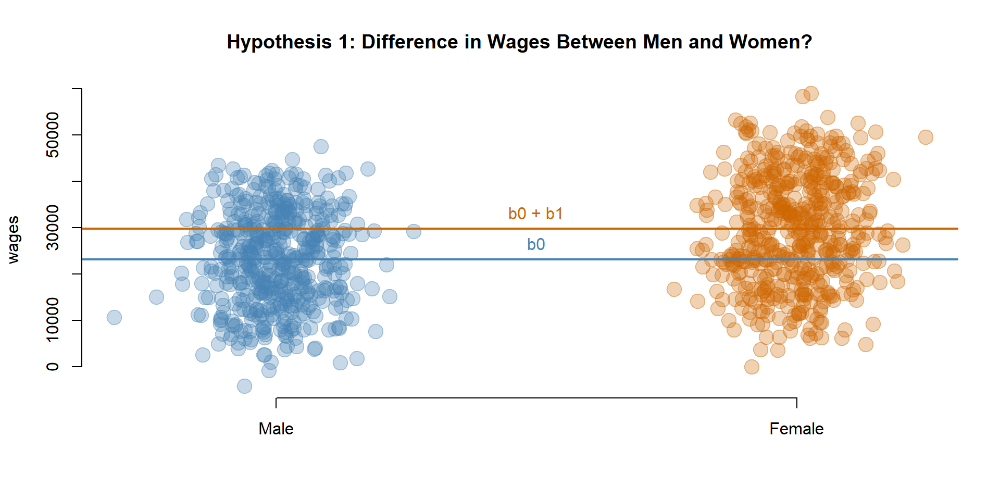
palette( c( adjustcolor( "steelblue", alpha.f=0.3), adjustcolor( "darkorange3", alpha.f=0.3) ) )
plot( years+rnorm(1000,0,0.25), wages, pch=19, col=(female+1), cex=1.5, bty="n",
main="Hypothesis 2: Relationship Between Experience and Wages?", xlab="Years of Experience" )
abline( lm(wages~years), col="black", lwd=2 )
points( 25, 1500, col="steelblue", pch=19, cex=2 )
text( 25, 1500, "Male", col="steelblue", pos=4 )
points( 25, 7000, col="darkorange3", pch=19, cex=2 )
text( 25, 7000, "Female", col="darkorange3", pos=4 )
text( 5, 50000, "Wages = b0 + b1*Years", cex=1, col="gray10" )
text( 5, 45000, "Slope = b1", cex=1, col="gray10" )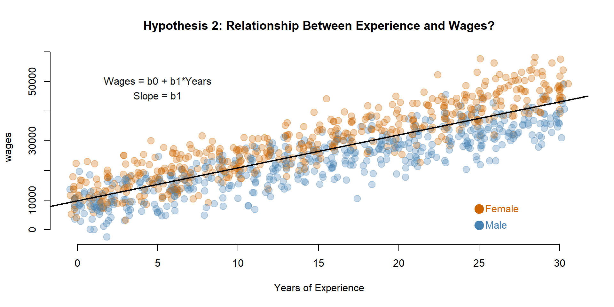
b0 <- coefficients(m.03)[1]
b1 <- coefficients(m.03)[2]
b2 <- coefficients(m.03)[3]
palette( c( adjustcolor( "steelblue", alpha.f=0.3), adjustcolor( "darkorange3", alpha.f=0.3) ) )
plot( years+rnorm(1000,0,0.25), wages, pch=19, col=(female+1), cex=1.5, bty="n",
main="Hypothesis 3: Difference Wages for Women Conditional on Experience?", xlab="Years of Experience", xlim=c(-5,30) )
abline( a=b0, b=b1, col="steelblue", lwd=2 )
abline( a=b0+b2, b=b1, col="darkorange3", lwd=2 )
points( 25, 1500, col="steelblue", pch=19, cex=2 )
text( 25, 1500, "Male", col="steelblue", pos=4 )
points( 25, 7000, col="darkorange3", pch=19, cex=2 )
text( 25, 7000, "Female", col="darkorange3", pos=4 )
text( 5, 50000, "Wages = b0 + b1*Years + b2*Female", cex=1, col="gray10" )
text( 5, 45000, "Slope = b1", cex=1, col="gray10" )
text( -3.5, 10000, "b0 + b2", col="darkorange3", pos=3 )
text( -3.5, 2450, "b0", col="steelblue", pos=1 )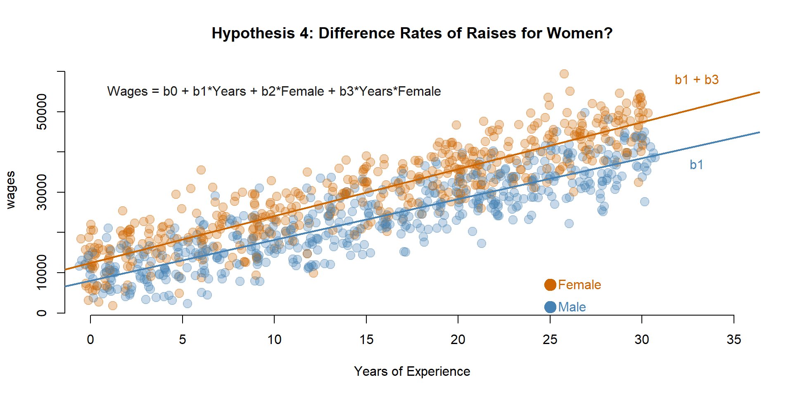
b0 <- coefficients(m.04)[1]
b1 <- coefficients(m.04)[2]
b2 <- coefficients(m.04)[3]
b3 <- coefficients(m.04)[4]
palette( c( adjustcolor( "steelblue", alpha.f=0.3), adjustcolor( "darkorange3", alpha.f=0.3) ) )
plot( years+rnorm(1000,0,0.25), wages, pch=19, col=(female+1), cex=1.5, bty="n",
main="Hypothesis 4: Difference Rates of Raises for Women?", xlab="Years of Experience", xlim=c(0,35) )
abline( a=b0, b=b1, col="steelblue", lwd=2 )
abline( a=b0+b2, b=b1+b3, col="darkorange3", lwd=2 )
points( 25, 1500, col="steelblue", pch=19, cex=2 )
text( 25, 1500, "Male", col="steelblue", pos=4 )
points( 25, 7000, col="darkorange3", pch=19, cex=2 )
text( 25, 7000, "Female", col="darkorange3", pos=4 )
text( 10, 55000, "Wages = b0 + b1*Years + b2*Female + b3*Years*Female", cex=1, col="gray10" )
text( 33, 55000, "b1 + b3", col="darkorange3", pos=3 )
text( 33, 40000, "b1", col="steelblue", pos=1 )